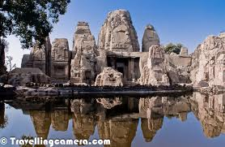
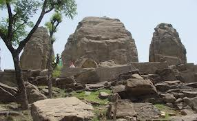
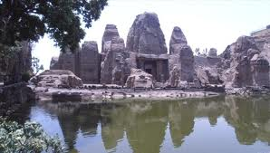
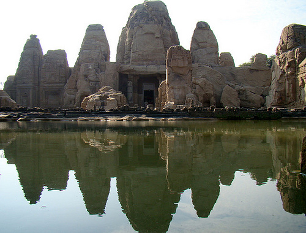
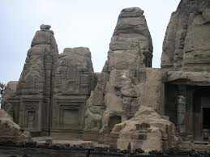
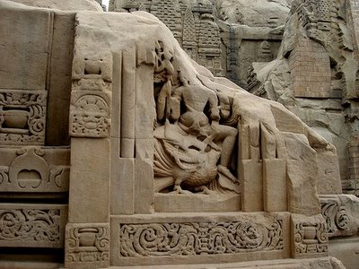
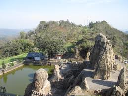
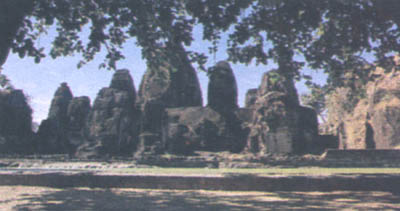
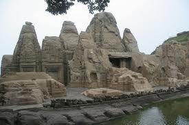

WELCOME TO
KANGRA VALLEY
INTRODUCTION
Masrur is 32 km from Kangra on Nagrota Surian link road and is famous for remarkable group of rock cut temples. They form a group of 15 monolithic rock cut temples in the Indo Aryan style and are richly carved. These richly ornamented cave temples are the only rock shrines in the northern part of India.The main shrine contains three stone images of Ram laxman and Sita but the presence of the figure of Shiva in the centre of the lintel affords a strong presumption that the temple was originally dedicated to Mahadeva.
read more

 HISTORY
The journey of life is strange. The Pandava’s stayed in jungles for I do not know how many years, but even then they managed to build beautiful temples and tunnels and what not! And today I am privileged to see those places, which were an outcome of their ???????????
????? ????? -The Masroor Temple is a beautiful temple located in the Kangda District of the state of Himachal Pradesh. Most of the tourists visit Dharamshala and Chamunda Temples but they miss this extremely beautiful spot, which is not yet developed by the Himachal Tourism but it looks better undeveloped and in its raw form only.
read more
HOW TO REACH
Those who come from Shimla need to head towards Dharamshala and take a right turn just after they happen to cross the Ranital Railway Station. The distance between the link road and the National Highway is just 22 kilometers, which would take not more than one hour.
Those who come by air, need to get a taxi from the Gaggal Airport and head towards Kangda, as soon as you leave the airport [ say 25 meters], a link-road goes towards the temple towards the right hand side.
One can from Pathankot towards Kangda and just leave the National Highway near ‘Nagrota Suriyan’ [ ?????? ???????]. One can find such boards all over the place to guide them.
The temples are breathtakingly beautiful and if you traveling in nearby areas, find some time to visit this place.
HISTORY
The journey of life is strange. The Pandava’s stayed in jungles for I do not know how many years, but even then they managed to build beautiful temples and tunnels and what not! And today I am privileged to see those places, which were an outcome of their ???????????
????? ????? -The Masroor Temple is a beautiful temple located in the Kangda District of the state of Himachal Pradesh. Most of the tourists visit Dharamshala and Chamunda Temples but they miss this extremely beautiful spot, which is not yet developed by the Himachal Tourism but it looks better undeveloped and in its raw form only.
read more
HOW TO REACH
Those who come from Shimla need to head towards Dharamshala and take a right turn just after they happen to cross the Ranital Railway Station. The distance between the link road and the National Highway is just 22 kilometers, which would take not more than one hour.
Those who come by air, need to get a taxi from the Gaggal Airport and head towards Kangda, as soon as you leave the airport [ say 25 meters], a link-road goes towards the temple towards the right hand side.
One can from Pathankot towards Kangda and just leave the National Highway near ‘Nagrota Suriyan’ [ ?????? ???????]. One can find such boards all over the place to guide them.
The temples are breathtakingly beautiful and if you traveling in nearby areas, find some time to visit this place.